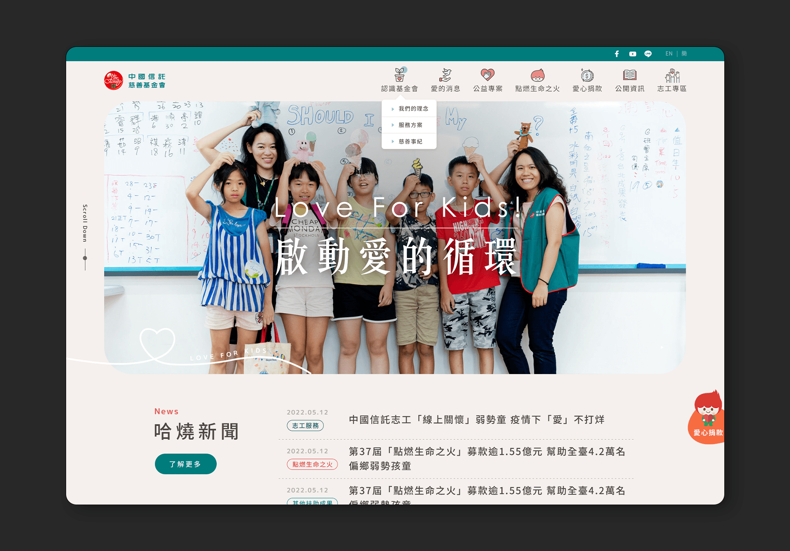
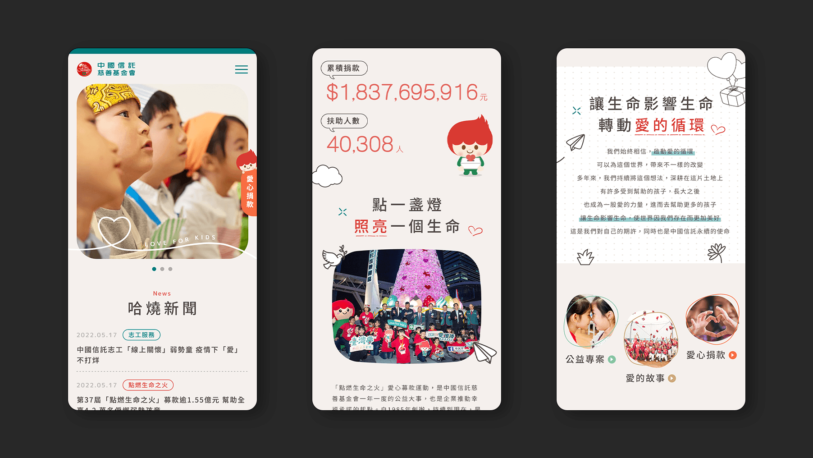

大家熟知的中信慈善基金會，這次改版想傳達的是「一眼有感」的轉變。延續品牌熟悉感的同時，運用中性清新的調性來襯托品牌識別色，加上帶有童趣感的手繪筆觸的插畫，營造溫暖&信任的氛圍
為了讓「小火子」更靈活地融入畫面：在最重要的CTA上，他會抱著愛心現身，負責感性地呼籲大家一起做好事；而在導覽或小icon上，則化身為輕盈的線條版，在介面中帶路。配合網頁滑動時的文字重點畫線與微動態，讓重要的內容自然被看見，也能讓使用者在瀏覽的過程中，慢慢累積對品牌的認同感

